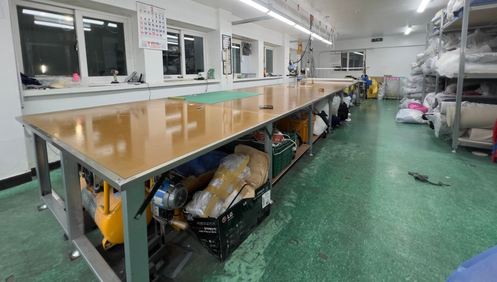
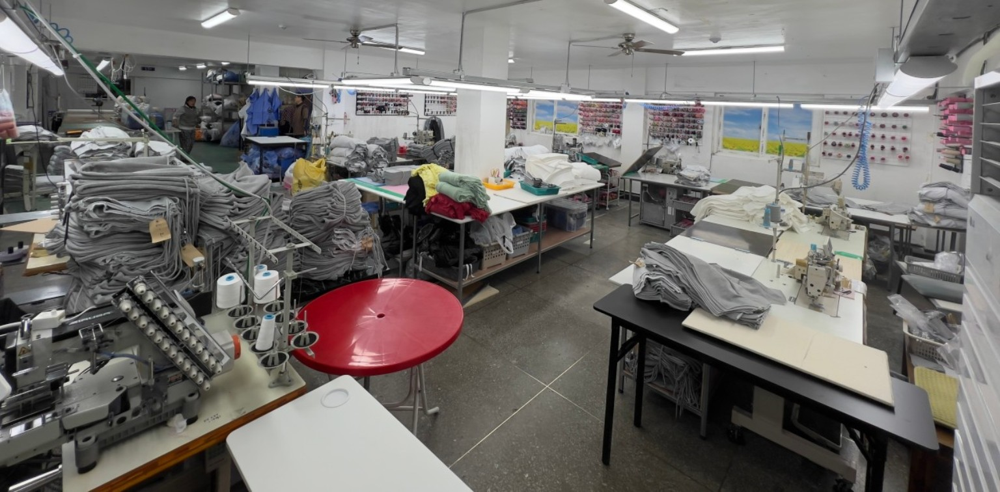
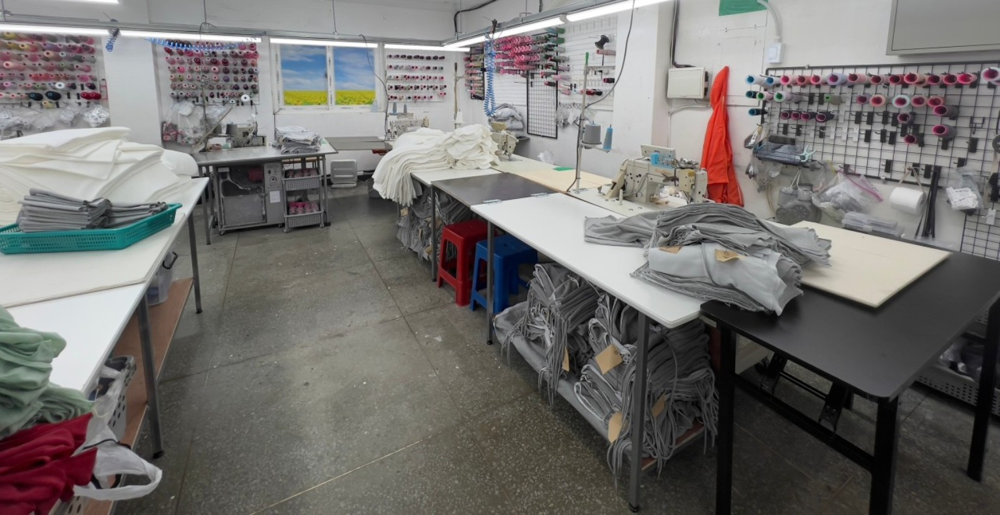
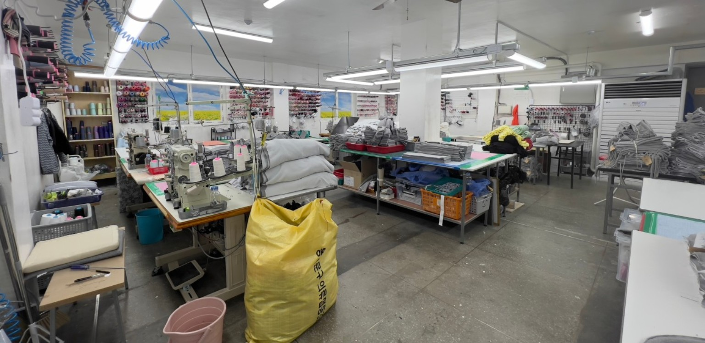
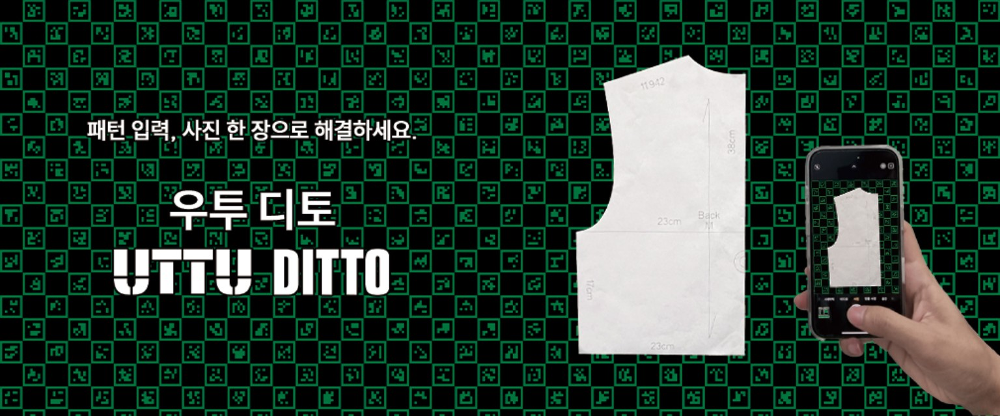

JIEUM SEWING FACTORY
브랜드의 가치를
봉제 기술로 완성합니다.
38년의 현장 경험을 바탕으로 브랜드의 생산 기준과 품질을 함께 고민하는 서울 동대문구 다이마루 전문 봉제공장, 지음입니다.
제작 문의하기 ↗전화 상담 02-2235-2189거래 브랜드 보기ABOUT JIEUM
오랜 경험, 흔들리지 않는 기본
38 YEARS
지음은 다이마루 의류 봉제에 집중해 온 전문 생산업체입니다. 현재 여러 의류 브랜드와 거래하며 디자인별 봉제 사양과 납품 품질을 중요하게 생각합니다.
서울패션허브 ‘의류제조마스터 300’ 선정 업체
PRODUCTION
주요 제작 품목
티셔츠
반팔 · 긴팔 티셔츠
스웨트 의류
맨투맨 · 후드티 · 후드집업
캐주얼 의류
조거팬츠 · 트레이닝복 · 가디건
구체적인 생산 가능 사양과 일정은 상담을 통해 확인해 주세요.
REAL PRODUCTION SITE
지음의 실제 생산 현장
실제 지음 봉제공장의 작업 공간입니다. 원단 준비부터 봉제, 마무리까지 현장에서 직접 관리합니다.




DIGITAL PATTERN WORKFLOW
CAD 패턴 작업과
우투 디토 도입
지음은 의류 제작의 기초가 되는 패턴 작업을 중요하게 생각합니다. CAD 기반 패턴 작업과 함께 우투 디토(UTTU DITTO)를 도입하여 디지털 패턴 업무 환경을 강화하고 있습니다.
패턴 · 제작 문의하기 ↗
BRAND PARTNERS
주요 거래 브랜드
현재 거래 중인 브랜드를 소개합니다. 각 브랜드의 생산 사양과 품질 기준에 맞춰 작업합니다.
히프나틱
데일리쥬
모렌트
프랑메리코
아워호프
메니크
애프터 아워즈
인스아울
에이알유
비커앤플라스크